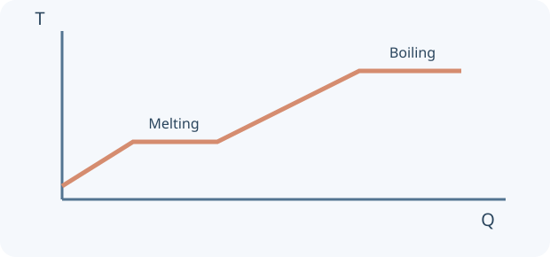

Thermal physics
Follow energy through materials, melt ice, determine specific heat capacity and mix warm and cool water.
Build the idea, one step at a time.
Temperature describes thermal state; heat is energy transferred because of a temperature difference. Internal energy is not the same as temperature or heat. Two objects at the same temperature can contain very different amounts of internal energy because their masses and substances differ.
For a temperature change without a phase transition, use Q = mcΔT with an appropriate specific heat capacity. During a transition at fixed pressure, latent heat can change state without raising the temperature of a pure substance. Conduction, convection and radiation provide different transfer mechanisms and can act together in the same situation.

01 · Temperature and internal energy
Temperature describes thermal state and relates to average particle kinetic energy. Internal energy includes microscopic kinetic and potential energy. Heat is energy transferred because of a temperature difference.
02 · Three transfer mechanisms
Conduction transfers energy through interactions and mobile electrons in metals. Convection is bulk fluid motion caused by density differences in a gravitational field. Thermal radiation is electromagnetic and can pass through a vacuum.
03 · Specific heat capacity
E = mcΔT, with E in J, mass in kg and c in J/(kg·°C) or J/(kg·K). A temperature difference has the same numerical value in kelvin and °C. Ideal calculations neglect losses and container heat capacity.
04 · Changes of state
During a change of state at fixed pressure, supplied energy changes phase rather than temperature. E = mL. Our ice/water curve uses 0°C melting, cᵢ = 2100, c𝑤 = 4200 J/(kg·°C) and Lf = 334,000 J/kg; heating ends below boiling.
05 · Thermal equilibrium
In an isolated mixture, energy lost by the warmer sample equals energy gained by the cooler sample. Equal final temperature does not mean equal internal energies. No phase change is modelled in the mixing investigation.
You can read these explanations without operating the simulator. The practical activities, games and revision below let you apply the ideas and check your reasoning.
Now investigate →Predict. Investigate. Explain.
Preparing the apparatus…
Choose an investigation, then follow the steps.
Starting stories and prediction · one clock, two objects
Compare a head start in position with a delayed release. B waits at its starting position until its start time.
Record and compare your results.
Up to 10 trials per investigation, kept while this page is open. Reloading clears the notebook. These practical notes and lesson checks are not sent to the teacher.
Check your understanding
Connect the model to the physics
Temperature and internal energy
Temperature describes thermal state and relates to average particle kinetic energy. Internal energy includes microscopic kinetic and potential energy. Heat is energy transferred because of a temperature difference.
Worked example. A large warm bath may contain more internal energy than a tiny hotter cup, even though the cup has a higher temperature.
Three transfer mechanisms
Conduction transfers energy through interactions and mobile electrons in metals. Convection is bulk fluid motion caused by density differences in a gravitational field. Thermal radiation is electromagnetic and can pass through a vacuum.
Worked example. Touch a metal spoon, watch heated water circulate, and compare matt black and shiny surfaces. Visible particle/ray speeds in the model are illustrative.
Specific heat capacity
E = mcΔT, with E in J, mass in kg and c in J/(kg·°C) or J/(kg·K). A temperature difference has the same numerical value in kelvin and °C. Ideal calculations neglect losses and container heat capacity.
Worked example. Heating 0.50 kg of water by 10°C takes 0.50 × 4200 × 10 = 21,000 J.
Changes of state
During a change of state at fixed pressure, supplied energy changes phase rather than temperature. E = mL. Our ice/water curve uses 0°C melting, cᵢ = 2100, c𝑤 = 4200 J/(kg·°C) and Lf = 334,000 J/kg; heating ends below boiling.
Worked example. Melting 0.20 kg of ice at 0°C needs 66,800 J. First warming ice from −20°C requires additional energy.
Thermal equilibrium
In an isolated mixture, energy lost by the warmer sample equals energy gained by the cooler sample. Equal final temperature does not mean equal internal energies. No phase change is modelled in the mixing investigation.
Worked example. Mix 0.20 kg of water at 80°C with 0.30 kg at 20°C: Tf = (0.2×80 + 0.3×20)/0.5 = 44°C.
Classroom connections
Use the apparatus model to test a prediction, record two trials with one changed condition, then explain the difference with an equation or diagram. Use your teacher’s worksheets for assessed tasks. The revision simulator below offers practice, mixed questions and a Test yourself mode.
Try it. Solve it. Play again.
Heat Transfer Dispatch and Energy Budget Kitchen: move cards, build a model and use feedback to work out the next step.
Ready to test your understanding?
Choose from 60 questions on thermal physics. Select question areas and levels, practise with explanations or take a Test yourself quiz, then retry mistakes.